Biggie de joven traficaba con drogas en Bedford-Stuyvesant. Tras dejar su vida de criminal, decidió hacerse rapero. Lanzó el criticalemente aclamado álbum Ready To Die en 1994 y se convirtió en la figura central del rap de la Costa este, que tanto rivalizaba con la Costa oeste, liderada en este caso por Tupac Shakur. Su carrera estuvo marcada por las continuas disputas entre Bad Boy Records y Death Row Records, y sin embargo, hasta su muerte (9 de marzo tras salir de una fiesta, salió en GMC Suburban, y al parar en un semáforo el conductor de un Chevrolet Impala, bajó la ventanilla y disparo cuatro veces contra el pecho de Biggie), The Notorious B.I.G. ha sido celebrado como una leyenda del hip hop. Su doble disco Life After Death, lanzado poco después de su muerte, es el álbum de hip hop que, hasta la fecha, más ha vendido en todos los tiempos, con 28 millones de copias. Desde los inicios de su carrera, Biggie destacaba por su contenido lírico, involucrado en letras de Gansta rap. Su contenido lírico trataba sobre "thugs" (gamberros o delincuentes) o mafiosos, una postura que muchos especulan que le podría haber conducido a la muerte. Está considerado como el segundo gran rapero de la historia, sólo superado por 2Pac. Biggie es recordado por sus raps y su Freestyling, y sobre todo por su flow que le hacía único. También fue pionero del método cada vez más popular de no escribir las líricas sobre el papel.
Mick y Keith se conocían de niños. Se reencontraron en un tren diez años después. Mick llevaba unos discos. Eso entusiasmó a Keith: su viejo compañero de escuela gustaba del rock & roll, como él. Cuando fueron tres, los adolescentes Mick Jagger, Keith Richards y Brian Jones formaron una banda: The Rolling Stones. En 1963 tocaron con asiduidad en el Crawdaddy Club. Allí hicieron sus primeros fans, incluidos cuatro muchachotes de Liverpool. George Harrison los recomendó a la Decca y les prestó a un asesor como manager, Andrew Loog Oldham. Echaron a los últimos músicos pasajeros, consolidaron los que tenían y así empezó todo: Jagger, Richards, Jones, Bill Wyman (bajo), Ian Stewart (piano) y Charlie Watts (batería) grabaron su primer sencillo: “Come On”, de Chuck Berry. Eran tiempos de singles y un “prestado” de Los Beatles, “I wanna be your man”, fue su primer éxito. Los Stones reunían los requisitos para ser nuevas estrellas, salvo un detalle. Comenzaban los 60s. Flequillo, saco y corbata, covers de blues, rockabillys. Eso era lo que gustaba a las niñas. Pero los Stones lucían muy zaparrastrosos para los estándares de la época. Fue allí cuando otra verdad se reveló: los zaparrastrosos también gustan a las niñas.